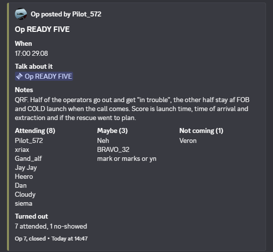
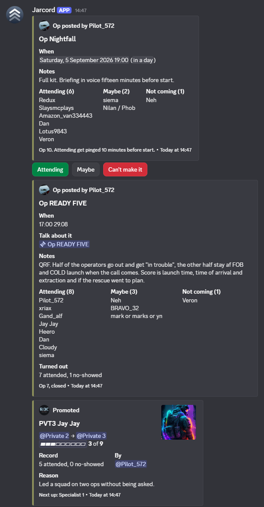

The service record of your faction, kept inside Discord.
Post the op, record who turned up, excuse the people on leave, and let promotion read the record. Nothing moves to a website.



How an op runs
1 Posted.
One command posts the op with a time everyone sees in their own timezone and three buttons: attending, maybe, can't make it. Attending get pinged ten minutes before start.
2 Turned up.
When the op ends an officer ticks who was actually there. The card closes with the count, on the same message the signups were on.
0
1
2
3
4
5
6
7
8
9 attended,
0
1
2
3
4
5
6
7
8
9 no-showed
3 On record.
Every attendance, no-show, warning, rating and promotion is a line on the member's record. Leave that was filed excuses a missed op. Anyone can read their own. Officers read everyone's.
4 Promoted.
Promotion reads the record. Promote and demote refuse to run without a written reason, then post the card so the whole unit sees why.
What else it does
- Verification that links a Roblox account.
- Tickets with transcripts filed on close.
- Warnings with a trail.
- A welcome card.
- An information hub built from panels.
- Activity and inactivity reports.
- A duty rota with a daily chore list that ticks itself.
- /ask, which answers from the faction's own rules and never reads anyone else's record.
Free and open source.
Jarcord+ comes later, with unlimited ops, the full history and ticket transcripts.